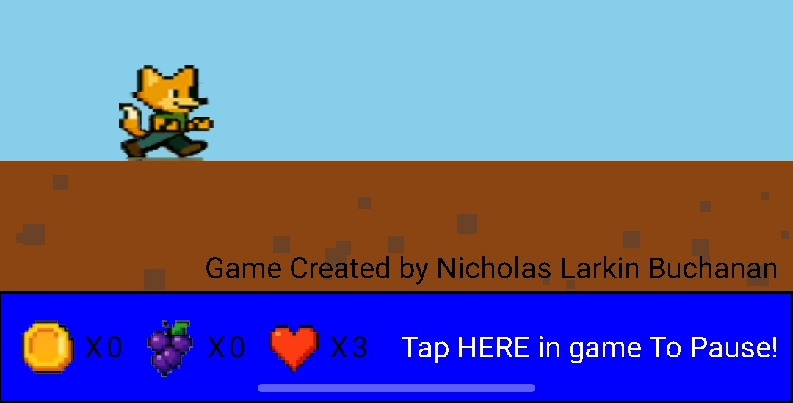

All Downloads


Space Pong
Space Pong is a Android game that's a remake of classic Brick Breaker... but in Space!
Download Page
Space Pong is a Android game that's a remake of classic Brick Breaker... but in Space!
Download Page